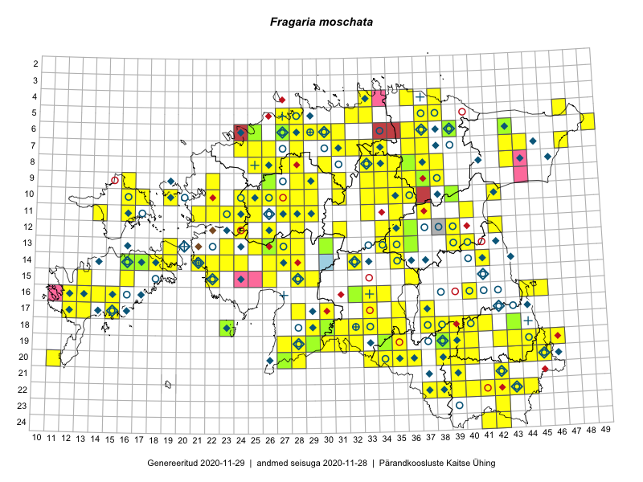

Fragaria moschata
Uuendatud: 2016-12-01
Kaardile koondatud taksonid: Fragaria moschata Duchesne

Kaart põhineb 371 kirjel, neist vaatlusi 365 ja eksemplare 6.
Kuvatud viited 20 esimesele andmebaasikirjele, ülejäänud PlutoFis
- Malle Leht: 2015-05-16: : ala
- Tiit Hallikma, Toomas Kukk, Indrek Tammekänd: 2015-06-09: 12-28: ala
- Malle Leht: 2015-07-09: : ala
- Peedu Saar: 2015-05-09: 13-30: ala
- Peedu Saar, Timo Luhamäe: 2015-05-12: 07-36: ala
- Peedu Saar, Timo Luhamäe: 2015-05-12: 07-36: GPS punkt
- Peedu Saar, Timo Luhamäe: 2015-05-13: 06-39: ala
- Peedu Saar, Timo Luhamäe: 2015-05-13: 06-39: GPS punkt
- Peedu Saar: 2015-05-14: 10-42: ala
- Peedu Saar: 2015-05-14: 10-42: GPS punkt
- Peedu Saar, Liina Oja: 2015-05-22: 19-30: ala
- Peedu Saar, Liina Oja: 2015-05-22: 19-30: GPS punkt
- Peedu Saar, Liina Oja: 2015-05-22: 19-30: GPS punkt
- Peedu Saar, Liina Oja: 2015-05-22: 19-30: GPS punkt
- Thea Kull: 2015-07-07: 16-40: ala
- Rein Kalamees: 2015-06-05: 05-32: ala
- Peedu Saar, Toomas Kukk: 2015-05-27: 09-16: ala
- Toomas Kukk, Indrek Tammekänd: 2015-05-09: 13-27: ala
- Toomas Kukk, Indrek Tammekänd: 2015-05-09: 14-27: ala
- Peedu Saar, Toomas Kukk: 2015-05-26: 10-16: ala